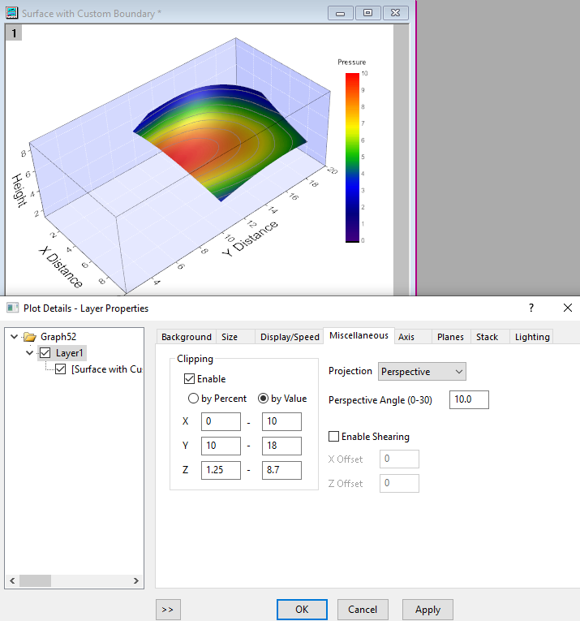

FAQ-172 Wie beschneide ich ein 3D-Diagramm?
3D-Clipping
Letztes Update: 12.10.2023
Um 3D-OpenGL-Diagramme innerhalb des aktuellen Achsenrahmens zu beschneiden:
- Wählen Sie bei aktivem 3D-OpenGL-Diagramm Format: Layer, um den Dialog Details Zeichnung zu öffnen.
- Wechseln Sie zur Registerkarte Sonstiges und aktivieren Sie das Kontrollkästchen Aktivieren unter Abschneiden.
- Wählen Sie nach Bedarf Nach Prozent oder Nach Wert(neu seit Origin 2020).
- Geben Sie die Prozente bzw. Werte für Von und Bis für jeweils X, Y und Z ein.
- 
Hinweis: 3D-Abschneiden wird nicht für ternäre 3D-Oberflächendiagramme mit Farbabbildung unterstützt.
Schlüsselwörter:3D, beschneiden, abschneiden, Rand, Oberflächenbereich, bestimmten Achsenbereich zeigen, festgelegter Achsenbereich
Origin-Version mind. erforderlich: 9.1 SR1